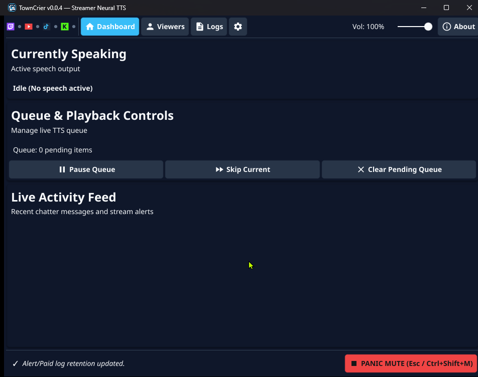
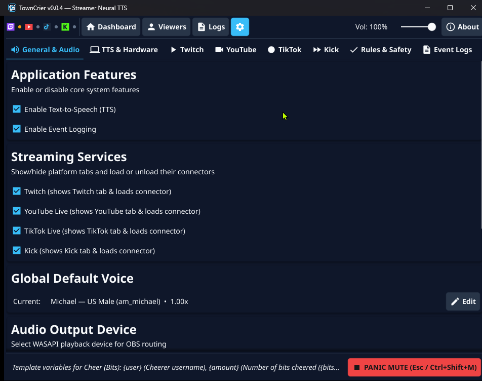
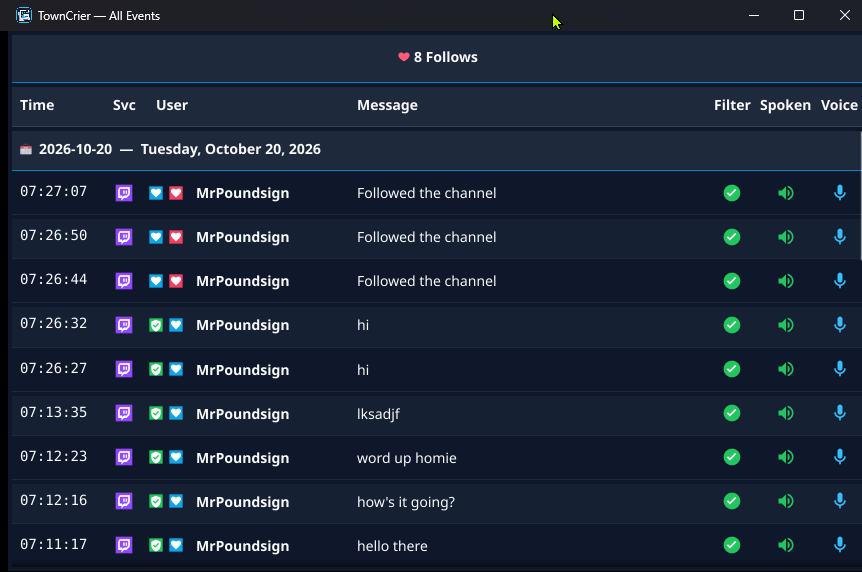
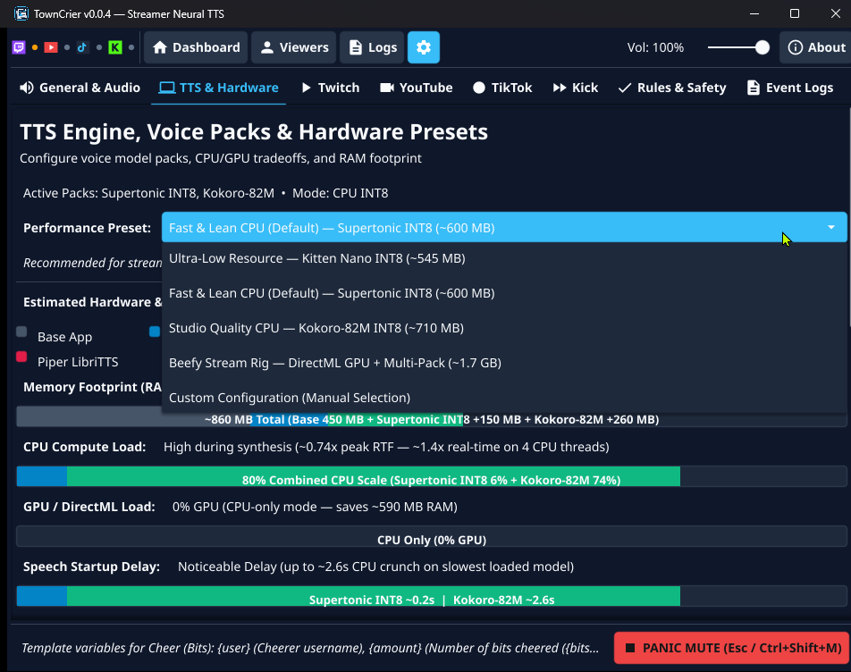

Local Neural TTS & Centralized Chat Aggregation
TownCrier is an open-source Windows and Linux desktop application that reads livestream chat and alerts aloud using local neural text-to-speech (TTS), or operates as an ultra-fast, lightweight multi-platform chat aggregator, event logger, and moderation tool.
Direct your TTS audio to any virtual cable or monitor sink for clean OBS Studio capture. Everything runs 100% offline on your machine with zero cloud subscriptions, API rate limits, character caps, or developer servers.

Modular Operation & Lightweight Efficiency
Configure TownCrier to fit your streaming hardware: toggle Text-to-Speech (TTS) and Event Logging independently in Settings → General & Audio.
Full Voice Announcer + Logger
Generates high-fidelity local neural speech with priority queues, custom chatter voice assignments, and multi-platform event alerts.
Lean Chat Aggregator (<40MB RAM)
Disable TTS to skip ONNX runtime initialization entirely. TownCrier launches in <100ms and acts as a minimal chat monitor and event logger.

Centralized Live Logs & Distraction-Free Pop-Outs
Connect all your stream platforms into a single unified chronological live tail feed:
- Multi-Platform Aggregation: Unified feed uniting Twitch, YouTube Live, Kick, and TikTok into one synchronized log.
- Rich Inline Emotes & Badges: Native rendering of Twitch emotes, YouTube custom emotes and Super Stickers, Kick emotes, and animated TikTok gifts (with automatic rapid combo grouping). Chatter badges (Broadcaster, Mod, VIP, Subscriber, Founder, Fan Club) appear alongside usernames.
- Independent Chat Font Scaling: Customize the zoom level of the chat feed to match your monitor layout with instant presets (80%, 100%, 125%, 150%) or a smooth custom % slider.
- Streamlined Pop-Out Windows: Launch floating windows stripped of toolbars and sidebars—displaying only the live event feed, sticky stream metrics, and active session status. Perfect for a secondary portrait monitor or capturing directly in OBS Studio via Window Capture.

Broadcast Stream Sessions & Telemetry
TownCrier automatically tracks your broadcast sessions as you stream:
- Automatic Session Tracking: Detects broadcast start and end timestamps and maintains an active elapsed duration counter (HH:MM:SS).
- Sticky Stream Metrics: Real-time summary counters tracking total message volume, alert events (subscriptions, bits, Super Chats, gifts), and unique chatter counts.
- Session-Bound Filtering: Isolate events from your active broadcast session or filter chat to specific elapsed broadcast time ranges.
Instant SQLite FTS5 Full-Text Search History
Never lose a chat message or moderation event. TownCrier embeds an ultra-fast local SQLite database with full-text search indexing:
- FTS5 Trigram Search: Blazing-fast full-text search across millions of historical chat messages and alerts with instant, typo-tolerant search matches.
- Multi-Session & Date Filters: Query historical records by specific date ranges, multi-session broadcast selections, platforms, event kinds, or usernames.
- Automated Data Retention: Configure automatic database retention policies (pruning by age in days or total row limit) to keep disk space lean.
- 100% Local Storage: All chat logs and search indexes reside on your machine in
%LOCALAPPDATA%(Windows) or~/.local/share(Linux). Zero cloud synchronization.
In-Log Streamer Moderation & Safety Controls
Manage your stream safety directly from the chat feed with built-in moderation tools:
- Inline Moderation Actions: Delete messages, timeout chatters, or permanently ban users on Twitch and YouTube Live (via secure OAuth 2.0 PKCE) with a single click on any chat log row.
- Local TTS Mute: Instantly silence irritating or spammy viewers from speech synthesis without having to timeout or ban them on the streaming platform.
- Twitch AutoMod Held Queue: Review held messages in real-time with one-click approve or deny actions before they reach your stream.
- Sub-50µs Emergency Panic Stop: Hit EMERGENCY STOP, press Esc, or trigger the global hotkey (Ctrl+Shift+M) to instantly cut audio buffers in under 50 microseconds and flush speech queues.
- Live Moderation Sync: Moderator deletions or timeouts on Twitch and Kick immediately purge queued speech items and halt playback mid-sentence.
- Bot & Profanity Filters: One-click common profanity filter toggle, custom blocked words/phrases, and known stream bot filtering (Nightbot, StreamElements, Fossabot, etc.) with per-viewer allow/ignore overrides.
Offline Neural Voice Packs & Hardware Presets
Experience natural speech synthesis without cloud subscriptions or character caps:
- Five Local Voice Model Families: Supertonic (default, ultra-fast 66M flow-matching model), Kokoro-82M (with Windows DirectML GPU acceleration), Kokoro International (Japanese, Mandarin, Spanish, French, Hindi, Italian, Brazilian Portuguese), Kitten Mini & Nano (distilled for single-PC streaming rigs), and Piper LibriTTS (904 distinct speakers).
- Hardware Presets & Impact Meters: One-click presets (Ultra-Low Resource, Fast & Lean, Studio Quality, Crowd Mode, Full Arsenal) with stacked color-coded bars displaying RAM, CPU math, and GPU acceleration usage.
- Priority Speech Queue: Subscriptions, Super Chats, Bits, Follows, and Raids bypass regular chat with zero queue expiration, while chat older than 30s drops during fast chat bursts to keep TTS synchronized with live stream events.

Legal, Licensing & Privacy
TownCrier is free, open-source software licensed under the GNU Affero General Public License v3.0 (AGPL-3.0).
We operate zero backend servers, telemetry, or user databases. For full details regarding our Google API Services Limited Use compliance and terms for optional platform integrations: